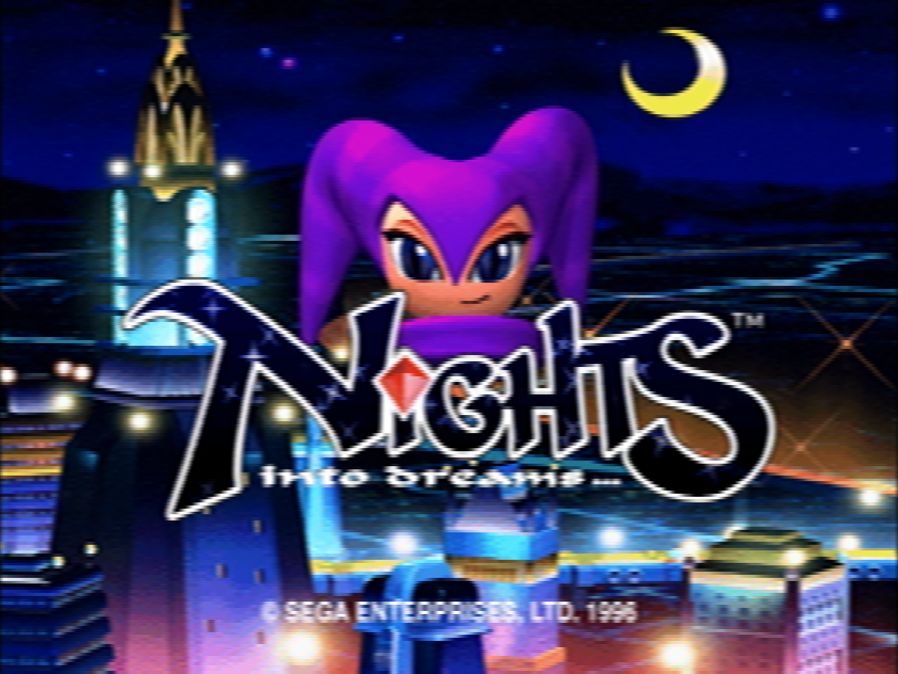

Despite it's western reputation of being a console no one had or played, the SEGA Saturn has a very large library of titles and a pretty sizable number of exclusives. While all of these range in quality and there is a large number of non-game software included aquarium simulations, previews for upcoming releases, demos, collections, and stuff unsuitable for mention here, there is still a great amount of titles that stand the test of time and are worth playing on Saturn or are best experienced on the system.
Exclusives
NiGHTS: Into Dreams
Developed by: Sonic Team
NiGHTS: Into Dreams is one of the best titles on the system and one of the most interestign games of all time. A one-of-a-kind experience that takes advantage of what makes the hardware unique and does wonders with it. Using a custom-developed 3D Pad, you take flight through the dreams of two children, Claris Sinclair and Elliot Edwards and try to collect as much as you can before time runs out.

Burning Rangers
Developed by: Sonic Team
Burning Rangers is an extremely inspired game, based on Naoto Ohshima's desire for a game about helping and saving people, rather than just fighting bad guys or the forces of darkness. The game tries to solve this problem by having you play as a fire fighter in a utopian society where natural disaster is the only concern of the modern era. Your goal is to save lives, not fight evil.